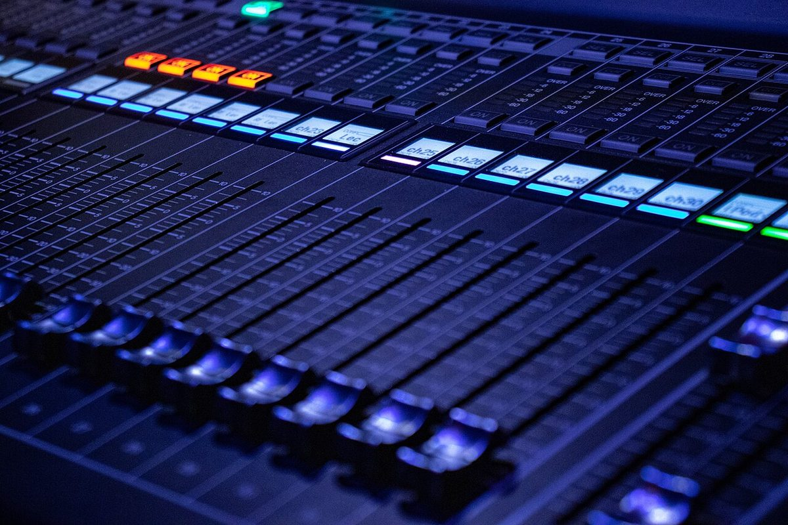
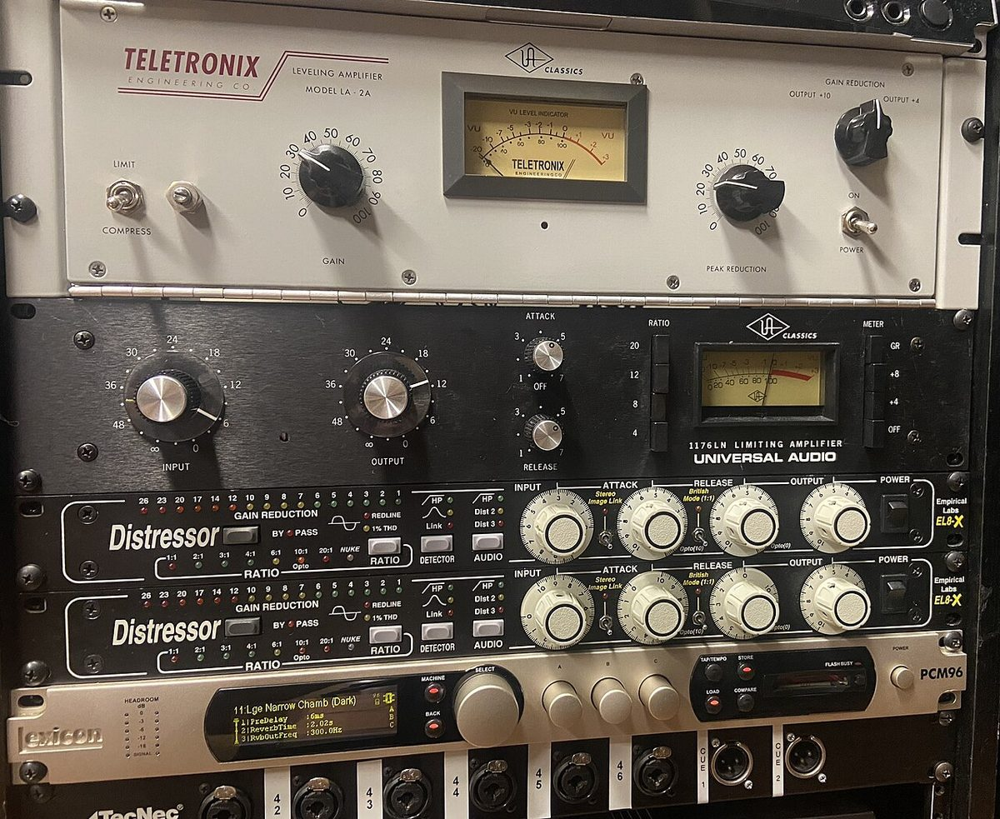
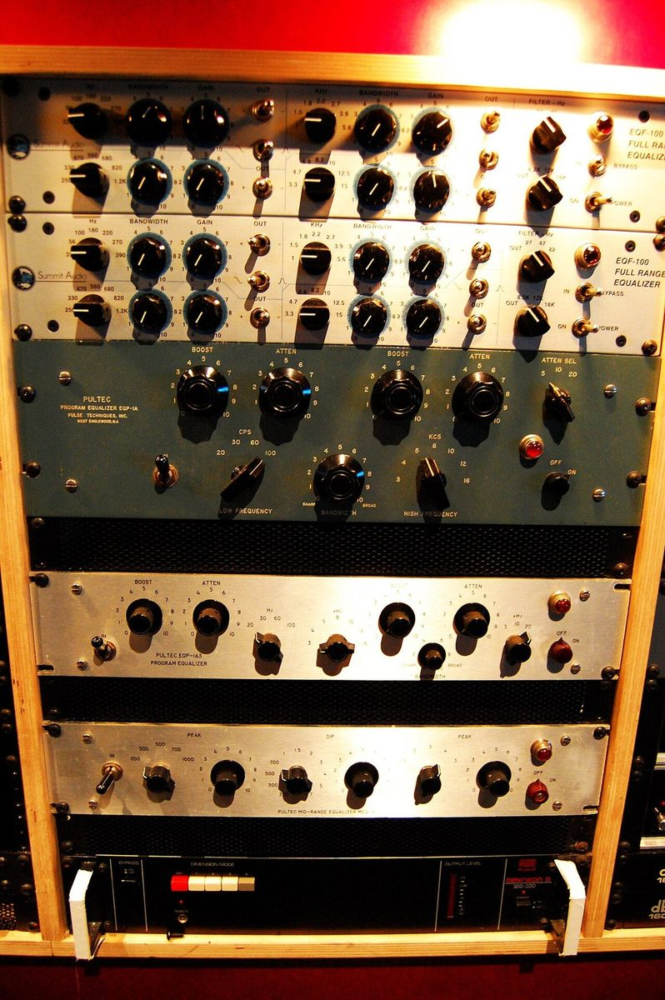

The Recording Session: Console, Cues & the Print
A live mixer has one job: make the room sound good right now. A studio console has three jobs at once. It has to send a clean signal to the recorder, give you a mix to judge in the control room, and give every musician a headphone mix they can play to. Every topic in this lesson is about keeping those three jobs from getting in each other's way.
1. Three things to make a recording
Strip away the console, the patchbay and the plug-ins, and every recording ever made, from Edison's tinfoil cylinder to a 96-track album, needs exactly three things:
A source
Something that makes sound: a voice, a guitar, a room full of players. No performance, no record. Most of a great recording happens here, before anything is plugged in.
A transducer
Something that turns sound into a signal. A microphone turns air pressure into voltage; a pickup turns a vibrating string into voltage. Its choice and placement shape the sound more than any knob after it.
A storage medium
Somewhere to keep the signal so it can be played back later: wax, tape, a hard drive in a DAW. Recording means storing; a sound you only heard live was amplified, not recorded.
Why it matters: when a session goes wrong, troubleshoot in this order. Is the source making sound? Is the transducer turning it into signal? Is the recorder receiving and storing it? The console is only the road between 2 and 3.
2. Two paths on one strip: channel path and monitor path
A studio console is usually in-line: each channel strip holds two separate signal paths. The channel path (the big fader) carries the microphone to the recorder. The monitor path (the small fader or monitor pot) carries the recorder's playback back to your speakers. Two paths means you can change what you hear without changing what you record.
3. All about the CHOP
CHOP is short for CHannel OutPut. On an SSL Duality it is each channel's own output, wired (through the patchbay) to that channel's DAW input. It's the exit door from the channel path to the recorder. The console lets you choose where along the strip that door opens. The Duality's choices are:
INPUT
Straight after the preamp. You record the raw mic with no EQ or compression. Nothing can be undone later because nothing was done. This is the safest choice while you're learning.
PRE FADE
After the strip's processing, before the big fader. You commit your EQ and compression to the track, but riding the fader for the control room never changes the recording.
POST FADE
After the big fader (the Duality's default). Every fader move is printed into the track. Bump the fader by accident and the take is ruined, so use it only on purpose.
EFX
An effects send becomes the channel output. This prints an effect (say, a reverb or a parallel compressor fed by sends) onto its own track.
The rule: before you press record, know your CHOP source and say it out loud: "CHOP is pre-fade, the comp is committed." On the Duality the AFL button on the strip lets you listen to exactly what the CHOP is sending, so check it with your ears and don't trust the button LEDs. In SPLIT mode (available only for INPUT or PRE FADE), the DAW's playback comes back into the channel after the pick-off point, so the rest of the strip monitors the recorder instead of the mic.
4. Cue sends: the why
A cue send taps each channel and feeds a separate mix to the performers' headphones. You need it because the mix you want to judge is never the mix they need to play to. A drummer wants loud bass and click; a singer wants their own voice and the piano. If they heard your control-room mix, every time you soloed, muted or rode a fader to judge something, the band would hear it too, mid-take.
Pre-fader, almost always
Cue sends are taken before the fader (on the Duality, stereo Cue A defaults to pre-fade). Then you can pull a fader down to judge the mix and the singer's headphones don't change. A post-fader cue is the number-one cause of "my headphones keep changing!"
Stereo with pan
Cues are usually stereo so you can pan players apart. Separation in the headphones helps people hear themselves, so they play quieter and in tune.
Different mixes for different people
Two cue buses (the Duality has Cue A and Cue B) let the band and the singer have different mixes. Personal mixers like the HearBack go further and give every player their own.
5. Cues, the HearBack, and the rules
A HearBack (made by Hear Technologies) is a personal headphone mixing system. You send a handful of feeds from the console or DAW (for example kick and snare, bass, guitars, keys, lead vocal, click, talkback, and a stereo mix of everything else) into a hub. Each musician gets a small mixer box on a network cable with one knob per feed plus a master volume. They build their own mix, and you stop being their headphone operator.
The catch: they can only mix what you give them. Your job moves upstream: choose sensible feeds, label them, and send them at healthy level.
The rules
- Ears first, theirs second. Turn the master down before anyone puts headphones on, and bring it up slowly. A full-level click into closed headphones can damage hearing.
- Check every station yourself before the musician arrives. Put on the headphones at each box and confirm every channel, the click and talkback.
- Feeds are pre-fader and post-processing they won't fight. Your fader moves and solos must never change their mix.
- Label every knob (tape and a marker). "Ch 5" means nothing to a bass player.
- Give them a reason to stop asking for "more me." Put a little reverb in the singer's cue from an FX return. A dry voice sounds thin, and singers push and go sharp to compensate.
- Click lives in the cue, never in the print. Keep it on its own feed so each player sets their own, and watch for click bleeding from loud headphones into a quiet mic.
- Closed-back headphones near open mics. Open-back cans spill the cue into the vocal mic.
- Talkback is polite and short. Say what's next before you roll ("Taking it from the second chorus, two bars of click"), and never talk over a take.
- Never solo in place while someone is playing. See section 8: destructive solo can change what gets printed.
- Don't patch or unplug a live feed. A pop at full level in someone's headphones ends the session. Mute first, patch, then unmute.
6. FX sends: the why, and the controls on the box
An FX send (aux send) taps a little of each channel and feeds it to one shared effects processor. The effect comes back on an FX return and is mixed in beside the dry tracks. Why not just insert a reverb on every channel?
One space for everyone
A single reverb fed by many channels puts the whole band in the same room. That's the glue that makes separate overdubs sound like one performance.
Post-fader, so the balance follows
FX sends are normally post-fader (the Duality's four FX sends default to post). Pull the vocal down and its reverb comes down with it, so the wet/dry balance stays the way you set it.
Fewer processors
One hardware reverb (or one plug-in) serves twenty channels. In a studio with a single good plate, that's the only option.
It's parallel processing
The dry signal is untouched and the effect is added beside it. That's why a reverb on a send is set to 100% wet: the dry already comes through the channel. Leave the box at 50% and you add a second, phasey copy of the dry.
The controls of FX processors
Compressor controls (threshold, ratio, attack, release, knee, makeup, sidechain filter and mix) are taught hands-on in Audio Compression.
7. Patch points: full normal and half normal
The patchbay is where every input and output in the studio meets on rows of small jacks (TT/bantam or ¼″). A patch point is a stacked pair: the top jack is an output (for example a preamp out or the CHOP) and the bottom jack is the next input (the DAW input or a compressor in). When the bay is normalled, the two are already connected inside, so the studio works with no cables at all. Patch cables only change the normal path. Try every combination:
Half normal: the everyday studio point
A top cable listens without breaking, so you can split a mic to a second recorder or a tuner, or "mult" one source to two places. A bottom cable breaks the normal so you can insert something new. Most preamp-to-DAW and CHOP-to-DAW points are half-normalled.
Full normal: for outputs that can't be shared
Any cable breaks the link, top or bottom. Use it where feeding two places at once would be wrong, such as insert send/return loops. Patching out of the top of a full-normal point silences the input below, which surprises people. That's the most common "where did my signal go?"
Denormalled (open)
No internal link at all. Outboard gear and tie lines are often wired this way so nothing is ever connected by accident.
Patching manners
Pull the fader or mute before you patch (a cable sliding across a jack sprays noise at full level). Patch from the output to the input. Pull cables when the session ends so the bay is back to normal for the next engineer.
8. Solo modes on the Duality: destructive vs non-destructive
Pressing SOLO lets you hear one channel alone, but how the console does it matters a lot. A destructive solo changes the actual mix to make the others silent. A non-destructive solo leaves the mix alone and just switches what the control-room speakers listen to. The Duality defaults to destructive Solo In Place, and can be switched to AFL or PFL listening. Solo the vocal and compare what gets printed with what you hear:
Mix bus → print / recorder
Control-room speakers
SIP: destructive
Cuts every other channel on the mix bus itself. You hear the soloed channel in its real place, with pan and level, but if you're printing, the print has only that channel. Reverb returns die too, unless they're solo isolated (solo-safe).
AFL: non-destructive
The mix bus is untouched. The control room switches to a solo bus that carries the channel after its fader and pan, at its level in the mix.
PFL: non-destructive
Like AFL but taken before the fader, usually in mono. You hear how hot the channel is coming in, even with the fader down. It's the right tool for checking a mic during a take.
Destructive vs non-destructive editing
The same idea exists in the DAW. A destructive edit rewrites the audio file itself (a normalise or a processed "render in place"). A non-destructive edit only changes the playlist: cuts, fades and clip gain point at the untouched original. Work non-destructively until you're sure, and keep the original files.
9. Confidence mixing and printing the mix
Printing a mix means recording it, playing the whole song through the console and capturing the stereo bus as a new file. It's called printing because once it's done, it's done: the print is the deliverable, not the session.
Confidence monitoring
While you print, listen to the recorder's return, not the mix bus. That's what was actually captured, after the converters, cables and the recorder's input. If a cable is crackling or a converter is clipping, the mix bus will sound perfect and the print won't. Confidence monitoring catches it while you can still fix it.
Confidence mixing
Mix the way you'll print: through the same return path, at the same level you'll deliver. That way the thing you approve is the thing you send. Then check the print on something else: a car, earbuds, a phone speaker.
Print at healthy level
Leave headroom: peaks around −6 to −3 dBFS, no clips, no limiter "just in case." Mastering needs room to work, and a clipped print can't be un-clipped.
Print the alternates
While everything is set up, print the versions people will ask for: main, vocal up, vocal down, instrumental, a cappella, and a TV mix (everything but the lead vocal). Label every file with song, version and date.
Print checklist
10. Why 24-bit / 48 kHz?
Two numbers describe every digital recording. Bit depth is how finely each sample's level is measured, and it sets the noise floor. Sample rate is how many samples per second, and it sets the highest frequency you can capture (the Nyquist limit: half the sample rate). Change them and watch the trade-offs:
Why 24-bit
Each bit adds about 6 dB of range: 16-bit gives about 96 dB, 24-bit about 144 dB, far more than any microphone or room. That huge cushion lets you record with lots of headroom (peaks at −18 to −12 dBFS) so a surprise loud note never clips, while the quiet parts still sit far above the noise. At 16-bit, playing it that safe costs you hiss.
Why 48 kHz
Humans hear up to about 20 kHz. 48 kHz captures up to 24 kHz, leaving a 4 kHz band for the converter's anti-aliasing filter to roll off gently (44.1 kHz leaves only about 2 kHz). It's also the standard for video, film, broadcast and games, so a 48k session drops straight into any picture project with no conversion.
Why not always 96 kHz?
Files double in size, plug-ins cost twice the CPU, and the extra octave is above human hearing. Some engineers use it for heavy pitch and time editing. For most sessions 24/48 is the sweet spot.
The rule
Pick the session format before the first take and never change it mid-project. Mixing sample rates makes files play at the wrong speed and pitch.
11. Session check
Each question is a real studio moment. Pick an answer to see the reasoning.
10. Studio hardware in the control room
Click any photograph to enlarge it for class discussion. Notice how the large-format console surface, outboard dynamics rack, and hardware equalizer connect via the studio patchbay.

Large-format console faders
Channel & monitor pathsEach strip carries its own long-throw fader, solo/cut buttons, and routing switches so the engineer can balance the control-room monitor mix without disturbing the CHOP send to the recorder.
Photo: Lchader / Wikimedia Commons (CC BY-SA 4.0)
Outboard dynamics rack
Patched via TT normalsHardware compressors like the LA-2A and 1176 live in the studio rack and appear on un-normalled rows of the TT patchbay—ready to be patched into a channel insert before the CHOP or across a monitor stem.
Photo: Wikimedia Commons (CC BY 2.0)
Outboard program equalizer
Commit vs. monitorWhen you patch an outboard equalizer like the Pultec EQP-1A into the channel path and set the CHOP to Post-EQ, that tonal curve is printed permanently to the DAW track.
Photo: Wikimedia Commons (CC BY 2.0)